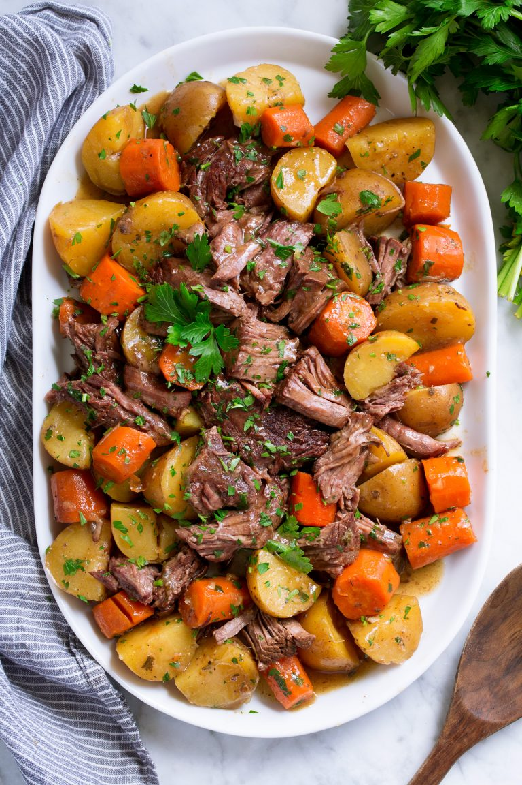

Description
Easy slow cooker pot roast with potatoes, carrots and onions
Ingredients
- 1 lb Roast beef
- clove of garlic or garlic powder
- 2 bags of chopped carrots
- sliced and diced onion
- 1/2 lb of sliced potatoes
Steps
- dice garlic or shake garlic powder on to roast beef
- slice potatoes
- put roast beef in slow cooker
- Add the potatoes and the carrots
- Add water to just cover the roast
- Cook on low all day
- Enjoy